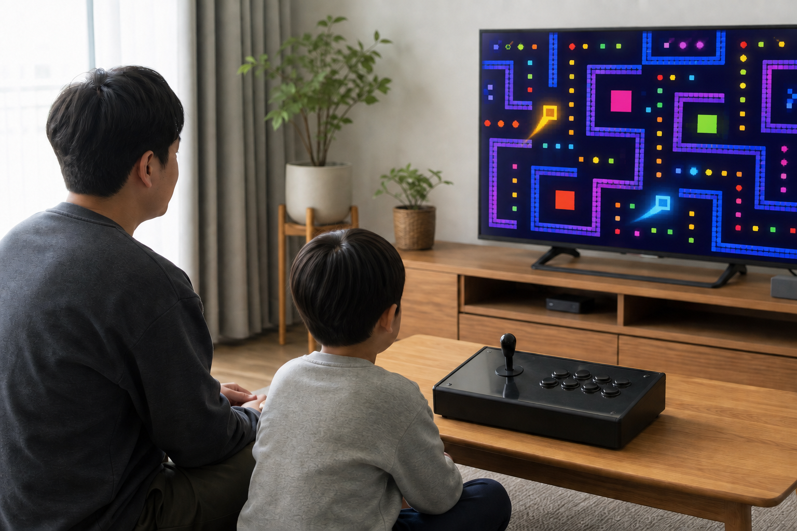
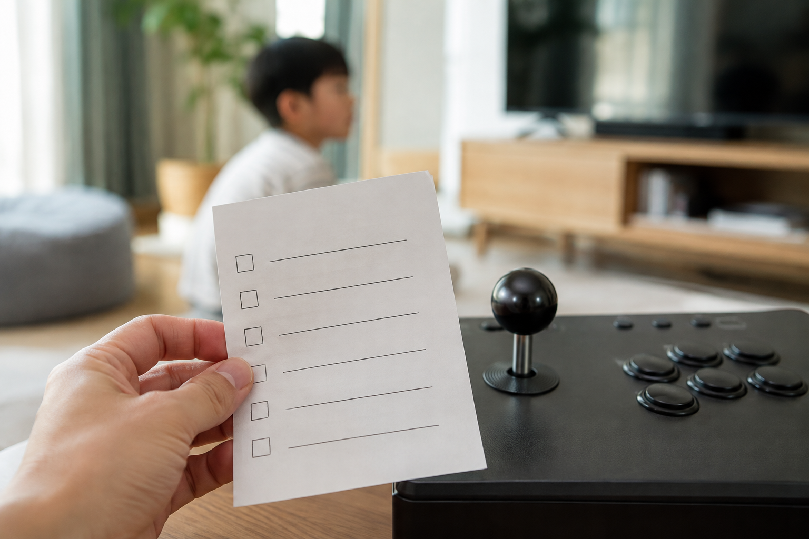
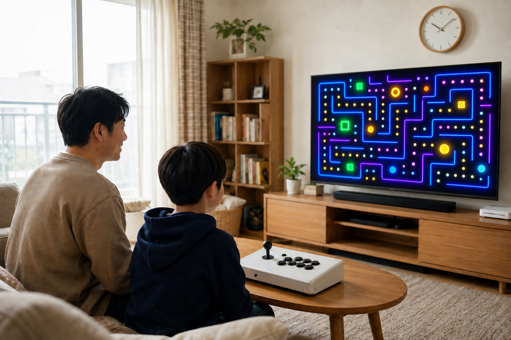

아이와 함께하기 좋은 오락실 게임은 정해진 제목 하나로 고르기보다 아이의 연령, 게임 속 표현, 조작 난이도와 함께하는 방식을 기준으로 현재 안내를 확인해 고르는 편이 좋습니다. 원하는 게임이 특정 기기에 들어 있는지와 이용에 적합한지도 구매 전에 보호자가 각각 확인하세요.

먼저 함께할 장면을 떠올려 보세요
아이와 나란히 할지, 번갈아 할지에 따라 편한 게임 방식이 달라질 수 있습니다. 처음에는 한 판의 흐름을 함께 보고 조작을 나눠 보는 방식이 부담을 줄이는 데 도움이 됩니다. 함께 즐기는 자리에서는 아이가 화면과 조작부를 편하게 볼 수 있는지도 살피세요.
아이와 하는 게임은 함께하는 방식부터 정하면 고르기 쉬워집니다.

게임별 현재 안내를 보호자가 확인하세요
게임 이름만 보고 판단하기보다 화면에 나오는 표현과 난이도, 필요한 조작을 실제 안내에서 확인하세요. 노리박스는 제품을 준비할 때 직접 게임을 실행하고 조이스틱과 버튼을 만져보며 사용 과정의 불편을 확인한다고 소개합니다. 다만 게임의 수록 여부와 이용에 적합한지는 제품·게임별로 달라질 수 있으므로, 구매하려는 상품의 현재 안내와 보호자의 판단을 함께 기준으로 삼아야 합니다.
아이와 함께할 게임은 보호자가 표현과 조작 난이도를 직접 확인해야 합니다.
조작은 짧고 단순하게 시작하세요
처음부터 복잡한 조작을 익히기보다 버튼 수와 움직임을 하나씩 확인할 수 있는 게임이 시작하기 편할 수 있습니다. 아이가 어려워하면 점수를 겨루는 대신 순서를 정하거나, 한 사람이 조작하고 다른 사람이 화면을 살피는 방식도 생각해 볼 수 있습니다. 노리박스 제품을 준비하는 과정에서 조이스틱과 버튼을 직접 점검한다는 소개는 구매 전 조작 환경을 질문할 때 참고할 만한 사실입니다.
처음 함께하는 게임은 아이가 조작을 따라갈 수 있는 흐름이 중요합니다.

짧게 해 보고 쉬는 흐름을 정하세요
가족이 함께할 때는 시작 전 한 번에 얼마나 할지와 멈출 때를 정해 두면 다음 게임으로 자연스럽게 넘어갈 수 있습니다. 화면을 본 뒤에는 손과 눈을 쉬게 하고, 아이가 재미있었던 점이나 어려웠던 조작을 말해 보게 하세요. 집의 자리와 화면 위치를 먼저 정리하고 싶다면 우리 집 공간에 맞는 오락기 형태, 두 사람이 같이 쓰는 구성은 가정용 오락기의 2인 이용 기준에서 이어서 확인할 수 있습니다.
함께 즐기는 시간은 게임 선택과 쉬는 흐름을 함께 정할 때 더 편안해집니다.
현재 노리박스 오락실게임기와 관련 제품은 제품자세히보기에서 확인하세요.